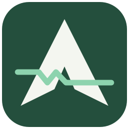

Offline operator guide · 0.6.0 · Windows x64
AeroTrace 1553 — Operator guide
Version 0.6.0 · Windows x64 · Updated 4 November 2026
This guide covers installation, offline rehearsal, receive-only DDC acquisition, ICD conversion, plots, saved tasks, reporting and diagnosis. Software tests do not qualify a physical card, bus connection or electrical transmit inhibit. Limited A-path loopback is recorded in the November 2 SES evidence. Responding RTs, Bus B, simultaneous channels, endurance and reconnect remain the highest-priority qualification work. See current-status.md and SES-Bench-Checklist.md.
1. Install and run V0.6.0
Use the V0.6.0 offline installer for operation, or build the CMake aerotrace_desktop target for development. See Release-0.6.0.md for simulation and deployment evidence. Historical SES installation and capture evidence describes the older tested build. V0.6.0 physical hardware qualification remains pending.
Installation
1. Use Windows 10 version 1809 or later, or Windows 11, on an x64 computer with writable local storage. This build is not for 32-bit Windows or native ARM64. A local administrator may be needed for the separate DDC driver installation; The V0.6.0 installer requires administrator rights and installs under C:\Program Files\AeroTrace1553. The preview installer is unsigned; a SHA-256 sidecar identifies the exact delivered file.
2. Copy AeroTrace1553-0.6.0-Setup-x64.exe to that computer and run it. The installer contains the application, Qt/Qwt libraries, isolated Python PDF/OCR runtime, local retrieval models, documentation and examples. It does not need an internet connection or separately installed Qt, Python or Node.js.
3. Accept the single application installation. Runtimes are included internally. Start AeroTrace from the Start menu or desktop shortcut.
4. For DDC capture, install the vendor-supported x64 driver and configure the actual logical devices with the vendor's utility. The application package includes the locally selected runtime; it does not silently install or replace card drivers. Use the runtime/driver combination supported by the fitted card. Supplied physical evidence covers SDK 3.6.15 / acexusb 3.6.15.1; other combinations require qualification.
5. For a PC with its own SDK installation, open Device setup → Technical details and enter that SDK folder or its x64 emacepl.dll. The package includes separately verified providers for aceXtreme 4.10.2 and 4.4.2.4 runtime fingerprints. Other runtime/header combinations require a separately built and verified provider; version discovery alone does not prove compatibility. With the field blank, DDC_SDK_ROOT takes precedence over automatic installed-SDK discovery and packaged fallback. An invalid configured SDK produces an error instead of silently choosing another version. See [SDK selection and compatibility](sdk-compatibility.md).
6. Open More tools → Help & Diagnostics or F1 and check version, OS architecture, plot backend and runtime status. A loadable runtime does not prove a connected card can initialize.
The single download is an installer, not a statically linked, DLL-free application. It installs the dependencies together. Copying only AeroTrace1553.exe out of the installed folder will not work. A portable folder can also be copied as a whole; keep its subfolders intact.
New installations store settings and recordings outside the installed program files. Updates/uninstall do not intentionally delete the user's data. Old portable installations with an existing adjacent preferences.ini continue using that file. Back up important data before moving an older portable folder.
2. Know where your data goes
| Item | Default location or behavior |
|---|---|
| User data | %LOCALAPPDATA%\AeroTrace\AeroTrace1553 |
| Preferences | preferences.ini in user data; an existing portable file beside the executable takes precedence |
| Replay recordings and sidecars | Documents\AeroSpace\Sessions; existing hidden recordings remain discoverable in Sessions |
| Paired raw CSV exports | Chosen CSV folder; initial suggestion Documents\AeroSpace\Exports. Only the two CSV files go here |
| Application journals | Logs in user data; F1 → Open logs opens the actual location |
| Indexed ICDs and conversations | Documents in user data, identified by PDF SHA-256 |
| Approved conversion profile | active-profile.json in user data |
| Reviewed changes | ReviewedActions in user data |
| Support bundles | Documents\AeroTraceDiagnostics in the Windows user profile |
| Batch reports | The output folder selected in Tasks and automation |
Prefer a local disk for the initial bench test. Verify enough free space for both ATD records and original Chapter 10 packet files. The recorder refuses a start or stops on less than 100 MiB available; reserve substantially more for real acquisition. Measure total file growth during the first minute to estimate the space required for longer tests.
3. Navigation and capture controls
The approved Live monitor layout starts with External and Internal side by side and Grouped by RT. Incoming RT 03 traffic updates RT 03’s existing row; RT 02 updates its own row. A/B times and totals remain independent. Expand an RT for latest messages by SA or mode code, direction and bus. Latest hexadecimal words are visible in the parent row. Pause RT display freezes only this display; raw recording continues. Chronological records restores the raw table. Per-pane filters never restrict recording. RT totals are receive-side aggregates and survive raw display-row eviction; up to 128 message routes per RT are listed, while all messages remain on disk. Broadcast and unclassified traffic have separate groups. Identical RT addresses on External/Internal stay separate.
The main pages are Live Bus Monitor, Engineering Values and Live Plot Analysis. More tools exposes the remaining pages, task automation and diagnostics. Collapse/expand the sidebar with Ctrl+B. Hover an icon to see its page name.
| Shortcut | Operation |
|---|---|
| Ctrl+1 / Ctrl+2 / Ctrl+3 | Monitor / Engineering / Plots |
| Ctrl+J | Open the separate ICD Assistant window |
| Ctrl+I | Import an ICD PDF or JSON profile |
| Ctrl+Shift+T | Tasks and automation |
| Ctrl+O | Open a recorded session |
| Ctrl+R | Start/stop capture, depending on current state |
| F1 | Help & Diagnostics |
| Space | Play/pause on Replay only |
Monitoring does not wait for a run name or CSV folder. Edit these in Welcome or Live monitor while recording. The chronological display retains its previous behavior; Pause RT display and Pause plots affect presentation only. Stop & save stops acquisition, drains pending packets, closes the recording and exports both complete channel CSV files. It runs in the background; wait for Complete before closing. After device loss, explicitly reconnect and start a new session. Keep this distinction in mind when measuring traffic or collecting evidence.
In hardware mode, configure devices and buses while stopped, then choose Connect devices. Connection configures the channels without receiving or creating a recording. Start recording is a separate explicit action. Launch, arrival and configuration edits never automatically record. Stop & save retains a healthy connection; Disconnect saves an active recording before releasing it.
4. Rehearse offline before connecting hardware
1. Open Tasks and automation → Offline simulation. Check Use offline simulator for the next capture and apply. Without an active ICD, leave ICD-based generation unchecked to use the original demo generator.
2. Import examples\demo-icd\AeroTrace-Demo-ICD.pdf from the installation. Wait for the indexing job to finish. Complete explicit digital tables can activate automatically; uncertain rows require review. This demo has a READY bit alias inside the full STATUS word. For ICD-based generation, open Mappings and evidence, uncheck READY, and choose Activate checked mappings to use eight non-overlapping fields. The full nine-field profile remains useful with the legacy demo source and replay.
3. Return to Offline simulation and enable Generate traffic from the approved ICD mappings. Start with constant, center 20, rate 120, drop interval 0 and flag interval 0. Apply while capture is stopped, then start the simulator explicitly.
4. Open Engineering Values. Check raw hexadecimal words, engineering units, decoded values, card time and quality. Different numeric encodings/scales can quantize or saturate; the same center is interpreted separately in each signal's units.
5. Select a signal and open its plot. Verify the selected CH/bus source has samples. Stop capture and open the resulting .atd from Sessions. Confirm replay uses the approved profile and can reproduce engineering values.
6. Save this setup as an offline task workspace for future regression checks.
The mapped simulator packs all non-overlapping applicable fields into each message and rotates through applicable routes/streams. It supports sine, square, ramp, constant and repeatable seeded noise. Total record rate is not the rate of every individual signal. Intentional aliases/overlapping fields require separate simulation profiles. A zero conversion scale cannot be inverted for generation. Legacy demo traffic intentionally includes occasional protocol flags; those flagged samples must not become valid engineering values.
Offline simulation generates software records. It does not transmit to a card, emulate a physical bus controller or prove hardware operation.
5. Hardware qualification
Establish the bench configuration
1. Confirm the exact DDC board/device model, serial number, driver version, logical-device assignments, physical channel connections and bus topology with the bench owner. Use approved monitor cabling/coupling and the vendor's hardware procedure.
2. Stop AeroTrace capture. Open Device Setup, select the real DDC source and set the logical device assigned to Channel 1 (External) and Channel 2 (Internal). The labels are operator labels; verify the actual physical mapping. Logical device IDs are vendor assignments, not Windows USB port numbers.
3. Enable only the channel/bus paths actually connected. Two enabled channel groups require distinct logical-device assignments. Do not assume defaults 0 and 1 match the bench. A single device/channel can be tested by disabling the unused group.
4. In Preferences choose the recording disk and save. Raw monitoring and complete-session CSV export require no ICD. For engineering verification, index/review the relevant ICD and select the correct profile and verify direction, address, word indexing, bit layout, numeric encoding, units and scale against a known message.
5. Save a task workspace named for the hardware configuration. In Help & Diagnostics record the run ID and collect a baseline support bundle if initialization is failing.
Perform a short receive-only run
1. Choose Connect devices, then Start recording. Observe both device status and capture state. The application configures the selected devices before starting acquisition. Failure of an enabled device prevents a successful dual-device start.
2. Use the bench's known traffic source. Confirm expected RT/SA addresses, transmit/receive direction, word counts, bus, channel and timestamp progression in the monitor.
3. Capture approximately one minute. Inspect the Capture Dashboard, Engineering Values and at least one plot. Confirm the provenance is DDC rather than SIMULATOR.
4. Watch hardware-loss and overflow indications separately from display skips. Display backpressure can thin the live table while raw recording continues. Hardware loss/overflow marks acquisition incomplete and stops recording; preserve that failed session.
5. Stop capture. Confirm the recording and sidecars exist. Open the .atd, verify CRC/recovery status, inspect a known message and compare its decoded value with a manual calculation from the actual ICD. Export a small verified dataset.
6. Open F1 → Collect support bundle. Keep the ZIP plus the entire recording family. Note the bench equipment, card/channel assignment, expected traffic rate, start/stop times and any issue you observed.
7. Only after the short run succeeds, repeat at representative duration/rate. Measure recording growth, queue pressure, hardware loss and timestamp behavior. Software stress tests are not a sustained physical-rate guarantee.
The source uses DDC MTI receive-only calls. BC scheduling, active RT emulation, bus injection and transmit testing are future work; there is no operator control for active bus transmission in this release.
6. ICD PDFs, concise chat and conversion corrections
Ctrl+J opens ICD Assistant independently of the main window. Select a PDF, choose Index PDF, and wait for extraction/OCR and indexing. Processing is local; capture runs on its separate worker. Each document has a separate conversation and retrieval scope based on its hash.
Ask short questions such as What is TEMP's unit?, What is TEMP's scale? or Describe TEMP conversion. Answers cite PDF source pages. Open PDF opens the evidence. The most recent two exchanges are displayed; the document's conversation remains saved locally. Optional local-model configuration is separate: the application does not bundle a generative LLM server. Evidence retrieval and conversion work without one.
For a correction, enter one explicit action, choose Preview action, verify the old/new value and formula, then choose Apply reviewed action. Stop capture before applying conversion changes. The signal must belong to the selected ICD, and the approved profile must still match the preview's starting profile.
| Request | Interpretation |
|---|---|
Set TEMP scale to 0.01 | Change engineering multiplier |
TEMP offset is -40 | Change engineering offset |
Set TEMP word index to 0 | First payload word; explicitly zero-based |
Set TEMP lsb to 0 / Set TEMP width to 16 | Bit-field definition |
TEMP is signed / TEMP is unsigned | Integer signedness |
Set TEMP rt to 3 / Set TEMP sa to 2 | Route matching |
Set TEMP channel to 2 / Set TEMP bus to B | Stream matching; channel 0 matches either, bus either matches both |
Set TEMP direction to receive | BC-to-RT matching; transmit selects RT-to-BC |
Set TEMP type to float32 | Encoding, requiring compatible field width/LSB |
Set TEMP word order to LSW first | Multi-word order; MSW first is also supported |
Set TEMP unit to degC | Engineering unit label; does not itself change scale/offset |
Plot TEMP | Select engineering plotting for that signal; can be reviewed during capture |
Example: a validated unsigned 16-bit extraction of hex 0BB8 is decimal 3000. With scale 0.01 and offset 0, engineering value is 30. This example only applies when the ICD actually defines that field, layout, encoding and route. Flagged/short/invalid payloads do not become valid values.
Ambiguous/compound instructions are rejected instead of partially applied. Numerical conversion runs in validated C++ services, not in RAG or model prose. An accepted clarification carries an operator note and a before/after audit. The original PDF and its indexed definition stay intact. Asking about the PDF can therefore show its original value even after an operator override. Save the reviewed setup as a workspace; reimporting/activating the original PDF profile can restore its original definition.
7. Monitor, engineering values and plots
Live Bus Monitor: the default movable-window workspace shows External / Channel 1 and Internal / Channel 2 in independent child windows. Drag their title bars, resize, minimize or maximize them inside the workspace. Tile and Cascade rearrange them. The layout selector and Preferences also offer tabs for Both channels, External or Internal. Switching layouts preserves recording, filters and selections. Filter bus and RT, search hexadecimal words, inspect a row, and choose visible raw columns. Double-click a message for its original words/provenance. A numeric raw-word selection can open raw numeric plotting; use a mapped signal for engineering units.
Message Inspector: examine command/status words, route, raw payload, source and original timestamps. Prefer this view when diagnosing an unexpected engineering value.
Engineering Values: check every active signal's raw words, decoded value/unit, card time and quality. Select the appropriate CH/bus stream. All active mappings are available in the table even when only a subset is shown as summary cards.
Live Plot Analysis: choose signal and CH/bus source. Up to eight traces are supported, including added traces. The history is bounded and downsampled for display; it is not a complete-recording archive. Pause affects plots only. Cursor selection resolves to a retained original sample in the selected stream; if the raw record has left the retained analysis window, open its complete recording to inspect it. Export a plot image for a test report.
Card time is relative device/source time, displayed with milliseconds and microseconds. Hours do not wrap at midnight. UTC application-log timestamps are a different clock. Do not assume two independent boards are physically synchronized until that is established on the bench.
8. Saved task workspaces
In Ctrl+Shift+T, apply simulation/check edits first and then save a named .aerotask.json workspace. It retains the approved profile/provenance, capture source, streams/devices, simulator settings, checks, display filters, plot selection/source, added traces, column visibility and sidebar state.
Opening a task validates it before applying it. Capture must be stopped and remains stopped. Start explicitly afterward. Referenced recording files/full PDFs are not embedded in the task. Use Clear added plot traces to reset added trace cards. If a check references a signal absent from the newly active profile, choose a valid signal or remove that check; it is not silently reassigned.
9. Automatic signal checks
Open Tasks → Signal checks. Add one row per signal and set engineering min/max, missing timeout in milliseconds and hysteresis. Blank bounds disable those bounds; missing timeout 0 disables its timer. Apply while stopped.
Checks are independent per matching channel/bus. Missing timers start after that stream first produces traffic and are reset by valid decoded values. Live silent-stream timers continue between packets; offline checks use recorded time and do not extrapolate past the last record. A never-observed stream is diagnosed through device/traffic checks rather than the signal's missing timer.
Events also report protocol flags, non-address status bits and backward card-time jumps. A status-bit observation is not automatically a hardware fault. Recovery transitions are logged, and clock resets restart the affected timers.
Events & Alerts shows the recent 512 transitions; its checkboxes filter display. The complete live transition log stays in .checks.jsonl. The Events CSV contains the retained recent events, not necessarily the whole capture. Capture configuration/check rules are preserved separately in .configuration.json.
10. Sessions, replay and exports
Open Sessions or Ctrl+O and select a completed .atd file. Keep its .profile.json, .icd.jsonl and other sidecars alongside it. The application validates stored records and reports recovered/incomplete tails. The latest profile sidecar can be loaded; if definitions changed during the capture, retain the revision timeline and verify the profile applicable to the chosen interval. Replay does not automatically reconstruct every historical activation boundary.
Use play/pause, speed, rewind and the position control. Inspect messages and compare engineering values/plots with the original run. A recovered recording can be useful evidence but is not equivalent to a complete capture. A CRC-valid stored file alone cannot prove that the hardware captured every bus message.
Stop & save finalizes capture and exports the complete recording as <run name>_int.csv and <run name>_ext.csv into the chosen output folder. The default suggestion is run1, then the next available run number. If either field is missing, the save dialog offers Desktop, Documents and Browse shortcuts. Cancelling leaves the finalized recording available for retry. Filters and display retention do not restrict these files. Use Sessions → Save selected session CSVs to export or retry a stopped recording. The live table retains approximately 5,000 rows and the analysis cache trims around 200,000 records; raw disk recording and complete-session export are independent of those limits. See section 16 for naming, partial-failure handling and replay.
Exports & Reports provides raw CSV/JSON and engineering CSV for a selected time range. For automatic processing of complete files, use Batch analysis. Keep generated SHA-256 files with exported data. Time ranges are card/source time, not the Windows wall clock.
11. Batch analysis and reporting
1. Stop capture. Activate/review the profile you want to apply and configure its checks.
2. Open Tasks → Batch analysis. Select 1–100 .atd/.atd2 recordings, each at most 32 MiB, and choose an output directory.
3. Choose Analyze and report. Processing is sequential and runs away from the UI thread. Cancel stops at the next bounded operation; completed outputs remain available.
4. Open the report folder. report.html is the readable summary; batch-report.json includes all outcomes, hashes, profile/check definitions and events. Each successful input has an engineering CSV and detailed JSON report.
The explicitly selected profile is applied to every input; per-recording historical profiles are not automatically substituted. Recordings without matching signals have zero valid samples. Missing/corrupt inputs are reported alongside successful ones. Recovered inputs are marked incomplete. Up to 10,000 event details per input are retained in JSON, with total count and a truncation flag. Full card timestamps beyond 24 hours are preserved.
Replay uses an index and bounded payload window; index memory still grows with record count. Batch analysis loads a complete input snapshot and enforces the 32 MiB per-input limit. Very large live recordings remain on disk, but huge-session streaming, automatic chunk rotation and power-loss/fsync guarantees are not qualified. Use short separate bench captures initially and preserve the complete originals rather than splitting binary files manually.
12. Logs and support bundles
Application journals are JSON Lines, one JSON object per line. Each run has a unique run_id and independently named segments. Records contain UTC, monotonic elapsed milliseconds, process/thread IDs, sequence, event, detail and structured fields. Files rotate at about 8 MiB; prior segments are retained. Logging failure prevents startup or is shown in the status bar if storage becomes unavailable during use.
The application records lifecycle, navigation/button/shortcut actions, notices, selected paths, profile activation, document-job IDs/progress/errors/durations, background export/batch results and support collection. It records operations rather than every keystroke or raw live word in the application journal. Raw words belong in the recording. PDF-worker exceptions include tracebacks. Capture health is sampled about once per second, rather than logging every record through the UI.
| Recording family | Purpose |
|---|---|
Capture_....atd | ATD2 raw records and provenance |
.atd.ch1.ch10, .atd.ch2.ch10 | Original hardware Chapter 10 packets for enabled devices |
.atd.events.jsonl | SDK calls/results, device phases, run/capture linkage, UTC/steady clocks, health, losses, errors and close status |
.atd.status.txt | Final recorded counts, hardware losses, display skips and incomplete/closed status |
.atd.profile.json | Latest conversion profile |
.atd.icd.jsonl | Profile activation boundaries/provenance |
.atd.configuration.json | Initial profile, simulation parameters and check definitions |
.atd.checks.jsonl | Signal/protocol/status/clock transitions |
application-<run>.crash.txt/.dmp | Best-effort report/dump of an unhandled application failure |
After a problem, stop capture if possible and use F1 → Collect support bundle. The collector reads logs, settings/profile metadata, action audits, recent capture sidecars, runtime hash/version and Windows DDC device/driver inventory. It does not initialize the bus or install drivers. It respects the configured recording folder. A ZIP and an unpacked folder are saved under Documents\AeroTraceDiagnostics.
The collector limits itself to the recent 100 log files, 10 capture groups, 20 action audits and 256 MiB total. Omissions/errors appear in system.json. Active files are snapshots and may be incomplete; collection after Stop is preferable. Raw ATD/Chapter 10 data, full PDFs and model files are omitted from the ZIP to avoid silently copying huge datasets. Preserve them separately. Journals and dumps may contain local paths, operator questions and process memory; review a bundle before sharing it outside your team.
If the GUI will not open, use Collect Diagnostics from the Start menu or run Collect Diagnostics.cmd in the installed folder. Attach the ZIP, matching installer/build version, recording family and a short description of expected versus actual behavior. Native crash dumps are best-effort and cannot be guaranteed for every OS termination, disk failure or power loss.
13. Troubleshooting
| Symptom | First checks / evidence |
|---|---|
| App cannot start / missing DLL | Install using the complete offline installer. Do not copy only the EXE. Keep Qt plugins, runtime folders and qt.conf. Check Windows error details if failure precedes application logging. |
| Runtime unavailable | F1 runtime detail, selected runtime path, x64 architecture, emacepl.dll hash/version in support bundle. |
DDC registry/init error -80 | Vendor driver/device assignment and correct logical device ID. Preserve aceInitialize result in .events.jsonl. A runtime DLL alone is insufficient. |
| One device works, dual start fails | Verify distinct logical devices and enabled streams. Disable the unused group for a controlled single-device test. |
| Connected but no traffic | Bench source running, actual channel/bus, monitor cabling, filters and logical assignment. Topology only shows observed addresses. |
| Hex visible, engineering empty | Active profile, RT/SA/direction, CH/bus, payload length, indexing, flags, encoding and bit width. Inspect raw quality before changing a scale. |
| Wrong engineering value | Compare one known raw message with the actual ICD formula; verify signedness, LSB/width, scale/offset and multi-word order. Preview one correction at a time. |
| Plot empty | Selected signal and CH/bus, valid samples, plot pause and correct engineering/raw selection. A paused or bounded display is not proof of missing recorded data. |
| PDF ambiguous or OCR errors | Review evidence page/candidates; use explicit JSON/editor mapping for unsupported layouts. No mapping should be guessed from absent definitions. |
| Chat shows different scale after an override | Chat quotes indexed PDF facts; operator overrides are separate. Inspect active profile/audit and save the approved workspace. |
| Hardware loss/overflow | Preserve the incomplete recording, original packets, events/status and support bundle. Repeat at a controlled rate only after documenting the failure. |
| Display skips with complete disk records | Investigate rendering/queue pressure separately from hardware loss. Reduce visible traces and inspect periodic health metrics and UI-delay journal events. |
| Capture stops on disk space | Free/choose a suitable recording disk and preserve the closed/incomplete files. Do not delete an active recording. |
| Logging/storage failure | Status bar/F1 logs path, disk free space and write permissions. New user data is outside the install folder. |
| Batch refuses a large input | 32 MiB per-input limit; preserve the large original. Huge-session streaming is not implemented. |
| Support ZIP incomplete | Inspect collectionIssues, custom paths, size limits and whether capture was active. Keep omitted raw files separately. |
14. Page reference and scope
| Page | Use |
|---|---|
| Welcome | Recent recordings and entry points |
| Device Setup | DDC/simulator selection, logical assignments, enabled streams |
| Capture Dashboard | RT response indicators by channel, latched for the run; select an RT for last device time and observed buses |
| Live Bus Monitor | Filtered raw traffic and inspection |
| Message Inspector | Original message, words and provenance |
| Engineering Values | Approved profile conversion and quality |
| Live Plot Analysis | Selected signal/raw numeric traces and cursors |
| Bus Topology | Observed traffic/address activity, not electrical topology discovery |
| Events & Alerts | Recent check transitions and display filters |
| Session Library / Replay Workbench | Open, validate, inspect and replay local records |
| ICD Library / Signal Editor | Profile management, supported field definitions and validation |
| Exports & Reports | Time-ranged raw/engineering datasets |
| Preferences | Storage and display settings |
| Help & Diagnostics | Runtime status, self-test, logs, support bundle and this guide |
| Tasks and automation | Saved workspaces, offline generation, signal checks and batch reports |
The local workspace/lock pages are not a physical dongle entitlement in this delivery. No key is required. No cloud service or model training is required. Physical receive behavior, sustained bench rates, card-clock accuracy, active BC/RT operation, large-file streaming, arbitrary ICD layouts, RHEL and signed public distribution are outside the completed software validation.
15. Bench result sheet
For each run, record: build/version and SHA-256; operator and local/UTC times; computer/Windows architecture; DDC model/driver/runtime; logical-to-physical channel map; enabled buses; traffic source and expected rate; approved ICD hash/operator overrides; run ID and capture path; test duration; expected/observed known values; hardware-loss/overflow/display-skip counts; replay/CRC status; issue reproduction steps; support ZIP and complete raw recording location.
Pass the initial bench only when the known traffic routes and values match, both intended paths are verified, no unexplained hardware loss occurs, timestamps behave as expected, Stop closes files, replay reproduces known values, and diagnostic evidence is preserved. Record failed conditions rather than treating simulator success as a physical pass.
16. Connection diagnosis, dual panes and complete runs
Earlier SES logs showed driver-open errors before successful November 2 capture testing. Those errors are historical, not current device status. The supplied 0.5.5 evidence records SDK 3.6.15, driver 3.6.15.1 and BU-67113U A-path loopback; exact configuration and wider qualification requirements are in compatibility-matrix.md and SES-Bench-Checklist.md.
1. In Device Setup, choose the DDC source and click Rescan DDC. Read runtime path/hash, Windows device identity, driver service/version, PnP problem status, and vendor logical assignments. A runtime can be available while no device is detected. Rescan does not initialize every logical device or modify drivers.
2. Open DDC Card Manager from Device Setup. Windows asks for administrator approval because the vendor manager requires it. Verify the physical model and assign each wanted 1553 channel a distinct logical device number. Return to AeroTrace and enter the correct numbers. Existing defaults are External = logical 0 / CH1 and Internal = logical 1 / CH2; these are role defaults, not verified physical associations.
3. Enable only present channels/buses. Connect explicitly. AeroTrace checks MTI capability and reports connection and traffic separately. A connection with zero messages can mean no traffic; check the known bench source, wiring and coupling. AeroTrace never substitutes simulator traffic for failed hardware.
4. For -82, inspect PnP status and matching INF, Card Manager assignments, access permissions and whether RTPro or another analyzer owns the device. Do not replace every driver or flash firmware as a troubleshooting shortcut. See SES-Bench-Checklist.md beside this guide.
5. Version 0.5 defaults to movable channel windows inside the workspace, initially side by side. Each window has independent filters, columns, selection and scrolling. Use the Live monitor layout selector or Preferences to choose Tabs. RT grouping adds a display-only pause; chronological tables retain their prior behavior.
6. Edit the CSV folder and run name in Welcome or Live monitor whenever convenient. Monitoring does not wait for these fields. Click Stop & save once and wait for stopping, draining, finalizing and export. Missing fields open a dialog with Desktop, Documents and Browse shortcuts. A name of run1 produces run1_INT.csv and run1_EXT.csv; the next available numbered name is suggested. Only CSV files go to that folder; manifests and recordings remain in Documents\AeroSpace\Sessions. Cancelling keeps the stopped recording for later saving.
7. The completion message gives both channel counts and the CSV destination; the manifest remains beside the replay recording. A disabled/empty channel receives a header-only CSV and a zero count. Never treat zero rows as proof of traffic acquisition. A damaged or failed session is marked incomplete; a failed connection produces no successful recorded run.
8. If a destination is full, disconnected, locked or unwritable, keep the recording and retry after correcting the destination. A partial failure can leave one completed CSV; it is reported rather than called a successful pair. Retries keep the allocated run name and folder. Changed/unrelated existing files are protected from overwrite.
9. Sessions → Save selected session CSVs exports or retries a stopped recording after restart. Open/double-click a recording to build its replay index in the background. Play, pause, speed, step and scrub work across the full index; only a bounded analysis window holds payloads in memory. Replay preserves acquisition order and raw device timestamps. Independent device clocks are not implicitly synchronized.
10. Keep the .atd and every adjacent sidecar together, including .session.json, .status.txt, .configuration.json, .events.jsonl, profile/timeline files and hardware .ch1.ch10/.ch2.ch10 packets. CSV is an export; ATD is the replay source. Session Rename moves associated files and updates metadata. Close an indexed session before moving its files manually.
The earlier advanced range-export page and batch workflow are separate tools. For complete runs, use Stop & save or Save selected session CSVs. Large indexed recordings are explicitly refused by the older in-memory engineering range exporter; full engineering range support belongs to the later ICD work.
E2MA USB and legacy MT capture
The supplied E2MA USB driver matches USB\VID_4DDC&PID_5590 and service e2mausb. The SDK covers both legacy MT and MTI monitors. AeroTrace opens a selected channel in passive MT mode to query its capabilities, then selects legacy MT or reopens it for MTI. A driver-open error -82 must be resolved before this capability selection can complete; MT support alone is not proof that the SES -82 cause is fixed.
Legacy MT preserves original 40-word SDK messages as .chN.mt40 alongside the ATD recording. MTI preserves Chapter 10 bytes as .chN.ch10. The CSV source is DDC_MT for classic capture and DDC_MTI for Chapter 10 capture; simulator records remain SIMULATED. The current MT and MTI configuration uses 2 microseconds per native tick; preserve the recorded tick_resolution_ns rather than assuming generic Chapter 10 units. For E2MA/EMACE the 16-bit timestamp may wrap while traffic is silent. AeroTrace extends observable wrap transitions and marks legacy timestamp ambiguity using validity bit 0x100 and LEGACY TIME in the monitor. It does not infer precise elapsed time across unobserved rollovers; host monotonic timestamps are preserved separately. Validate the actual model/timestamp behavior at the bench before timing analysis.
Legacy MT source provenance uses source value 2 in the existing ATD2 record layout. Use AeroTrace 0.4.0 or later to read these new legacy captures; old ATD1/ATD2 recordings remain readable by the updated application.
17. Version 0.5 workspace and RT indicators
Welcome shows next-run settings, recent replay files and measured hardware readiness. Device setup keeps Windows detection, driver binding, SDK availability, vendor logical assignment, monitor initialization and traffic separate. A detected DLL or staged driver is not proof of a working connection. Offline simulation generates test traffic; Open recorded session replays a saved capture.
Dashboard green means a valid RT response was observed on that channel during the current run. It remains green until a new run, including while visiting other pages. Grey means no valid response has been observed. Select the RT for response totals, observed buses and last device timestamp. Address 31 is broadcast and has no responding-terminal lamp. The dashboard is observation, not electrical topology discovery or a claim that a silent RT is disconnected. Simulation and replay are labeled.
Live monitor stores child-window positions/sizes, columns and channel filters. Use Layout → Tabs for the combined full-width table. Selected rows remain the source of Inspect, Engineering and Plot actions. Display retention is bounded; complete disk recording is independent of scrolling, filters and layout.
CSV exports use temporary files and validate recording CRCs while streaming. Export names cannot overwrite unrelated files. A failed export retains the recording, its allocated name/folder and ownership metadata; restore that destination and retry. A completed empty/disabled channel has a header-only CSV and is called out in the completion message. Session/export manifests stay with the replay recording in AeroSpace rather than cluttering the selected CSV folder.
Application logging runs on a dedicated writer with bounded buffering, batched writes and shutdown draining. Queue or storage failures remain visible. UI heartbeat delays and slow refreshes include the recording path. Capture journals retain SDK calls, queue pressure, buffer loss, draining and integrity outcomes. These software measurements do not qualify physical DDC monitoring; complete the SES bench checklist with known passive traffic.
18. Match the live monitor with a CSV export
Compare the same record number and session, not the visible row position. The monitor retains recent rows and can filter traffic; Stop & save exports the complete recording, including earlier records and the final drained tail. External is CH1 and Internal is CH2.
Complete-session CSV v2 retains the original first 16 raw fields and adds monitor-style time, rt, sa, direction, word_count, and quality. Raw timestamp_ns retains full device precision; time matches the monitor's microsecond display. Additional command_hex, status_hex, vendor/second-command/status hex and word_0_hex through word_31_hex use explicit 0x prefixes. These text values preserve leading zeros and hex values such as 1E10 in spreadsheets. session_id identifies the source recording. CSV files use UTF-8 with a BOM so spreadsheet programs display arrows correctly.
The original words field is unchanged uppercase, zero-padded hex. If a spreadsheet reformats an unprefixed legacy field, compare against the explicit _hex columns or import that column as Text. A nanosecond timestamp and a formatted card time represent the same stored timestamp. Keep the ATD recording for lossless replay.
The supplied 0.4.0 run1_EXT.csv and run1_INT.csv were checked against their original CRC-valid recording: all 305 records matched (153 External, 152 Internal). This checks the saved recording against its exports; a historical live-screen snapshot was not supplied. The original files were preserved.
Live monitor's save is tied to its displayed live capture, even after visiting a different replay. The visible Live capture ID matches the CSV session_id. Saving a selected file from Sessions does not replace that live-capture identity.
19. DDC readiness and protocol interpretation
Rescan DDC reports runtime availability, present Windows devices, driver binding, and populated vendor assignment candidates separately. Empty vendor registry slots are not configured channels. An incomplete scan reports presence as unknown. Card Manager must establish the physical channel-to-logical-number association; AeroTrace preserves your selected numbers and does not guess them.
For E2MA USB, verify hardware ID USB\VID_4DDC&PID_5590, driver service e2mausb, PnP status and matching installed INF. An installed package alone does not prove a connected card. Error -82 reports a failed SDK driver open; check the same computer's discovery evidence and Card Manager configuration before choosing a remedy. Drivers, registry assignments and firmware are not modified automatically.
The application selects classic MT or MTI from SDK capability evidence and logs model, serial, firmware/HDL raw values and the actual operations. Stop & save drains available data and records final integrity evidence before releasing SDK handles. Loss, disconnect, stop/read/free or disk failures label the recording incomplete; export retains all available validated records. MTI counters are observed high-water evidence with raw per-channel snapshots, not proven lifetime totals.
Monitor direction, inspection and CSV now distinguish RT-to-RT and broadcast transfers. RT/SA identify the payload route; for RT-to-RT that is the transmitting second command. Mode commands show a mode code/name and their expected zero/one-word payload rather than an ordinary word count. Hover Quality, Status or the inspection details for reasons and decoded status meanings.
Service Request and other informational status bits do not automatically mark data faulty. Busy, fault status, absent expected responses, malformed commands and payload-count mismatches block engineering conversion. Raw words remain recorded and exportable. Engineering tables display a rejection reason instead of inventing a value or falling back to an older valid value for the same route.
CSV schema aerotrace.raw-csv.v3 retains the existing columns and appends transaction participants, mode information, expected/actual payload counts, eligibility/reasons, presence flags, status meanings and evidence/timing labels. For mode commands, ordinary word_count is blank. Existing ATD1/ATD2 recordings remain readable and unchanged; missing SDK evidence is identified as inferred.
Response-time and intermessage-gap verdicts are not measured. Timestamp encoding does not establish physical accuracy; classic timestamp rollover ambiguity remains visible. Separate card clocks are not assumed synchronized. See [DDC protocol safety](DDC-Protocol-Safety.md) and complete the [hardware checklist](SES-Bench-Checklist.md) independently on this PC and SES.